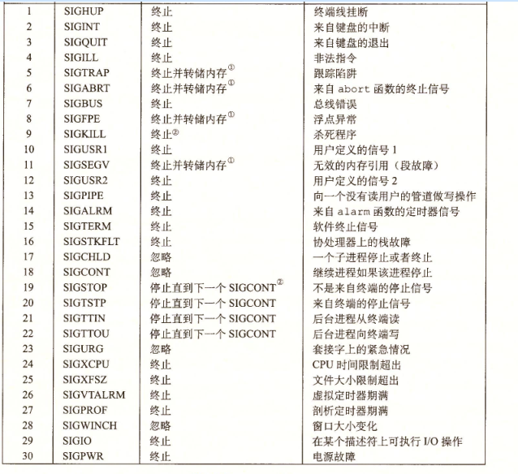

异常
异常是异常控制流的一种形式，它一部分由硬件实现，一部分由操作系统实现。异常就是控制流中的突变，用来响应处理器状态中的某些变化。
异常处理
系统中可能的每种异常都分配了一个唯一的非负整数的异常号
处理器分配：被0除、缺页、内存访问违例、断点及算数运算溢出
操作系统内核分配：系统调用和来自外部I/O设备的信号
异常的类别
中断、陷阱、故障和终止
进程
在现代系统上运行一个程序时，我们会得到一个假象，就好像我们的程序是系统中当前运行的唯一的程序一样。程序好像独占地使用CPU和内存。处理器好像无间断地一条接一条地执行程序中的指令。程序中的代码和数据好像是系统内存中唯一的对象。
用户模式和内核模式
处理器通过某个寄存器的
模式位来控制程序从用户态到内核态的转换。当设置了模式位时，进程就运行在内核模式中，一个运行在内核无中的进程可以执行指令集中的任何指令，并且可以访问系统中的任何内存位置。
没有设置模式位时，进程就运行在用户模式中。用户模式中的进程不允许执行
特权指令，比如停止处理器、改变模式位，或者发起一个I/O操作。也不允许用户模式中的进程直接引用地址空间中内核区的代码和数据。任何这样的尝试都会导致致命的保护故障。
上下文切换
操作系统内核使用一种成为
上下文切换的异常控制流来实现多人物。内核为每一个进程维持一个上下文。上下文就是内核重新启动一个被抢占的进程所需的状态。它由通过目的
寄存器、浮点寄存器、程序计数器、用户栈、状态寄存器、内核栈和各种内核数据结构，比如描述地址空间的页表、包含有关当前进程信息的进程表以及包含进程已打开文件的信息的文件表
信号
一个信号就是一条小信息，它通知进程系统中发生了某种类型的事件

发送信号
内核通过更新目的进程上下文中的某个状态，发送一个信号给目的进程。
Unix系统的发送信号机制是基于
进程组的，每个进程都属于一个进程组，默认的一个子进程和它的父进程属于同一个进程组，一个进程也可以通过setpgid(pid_t pid, pid_t pgid)函数改变自己或其他进程的进程组
2
3
发送信号9（SIGKILL）给进程 15213
在键盘上输入
Ctrl+C会导致内核发送一个SIGINT信号到前台进程组中的每个进程。
接收信号
当目的进程被内核强迫以某种方式对信号的发送做出反应时，它就接收了这个信号。进程可以忽略这个信号，终止或者通过执行一个称为
信号处理程序的用户层函数捕获这个信号。当内核把进程p从内核模式切换到用户模式时，它会检查进程p的未被阻塞的待处理信号的集合。如果这个集合为空，那么内核将控制传递到p的逻辑控制流中的下一条指令。如果集合是非空的，那么内核选择集合中的某个信号k，并且强制p接收信号k。收到这个信号会出发进程采取某种行为，一旦进程完成了这个行为，那么控制就传递回p的逻辑控制流中的吓一跳指令。每个信号的类型都有一个预定义的默认行为：1、进程终止 2、进程终止并转储内存 3、进程停止（挂起）直到被SIGCONT信号重启 4、进程忽略该信号
阻塞和解除阻塞信号
隐式阻塞机制
内核默认阻塞任何当前处理程序正在处理信号类型的待处理信号。
例如：程序捕获了信号s，当前 正在运行处理程序S。如果发送给该进程另一个信号s，那么直到处理程序S返回，s会变成待处理而没有被接收。
显示阻塞机制
应用程序可以使用sigprocmask函数和它的辅助函数，明确地阻塞和解除阻塞选定的信号。
操作进程的工具
- STRACE：打印一个正在运行的程序和它的子进程调用的每个系统调用的轨迹
- PS：列出当前系统中的进程（包括僵死进程）
- TOP：打印出关于当前进程资源使用的信息
- PMAP：显示进程的内存映射